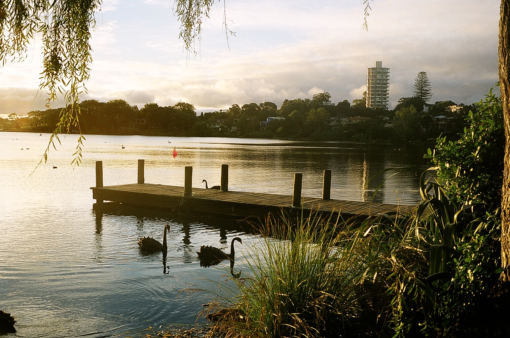
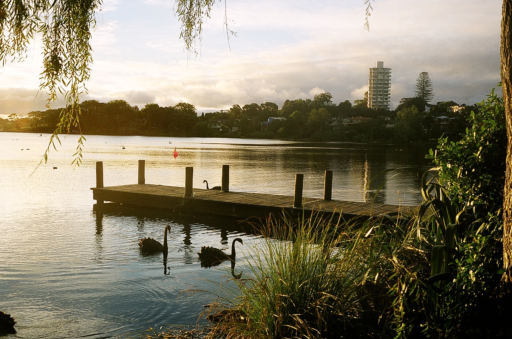
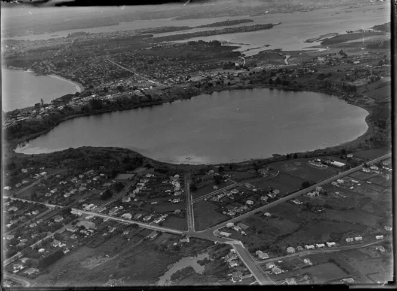

Rangitoto
.jpg)
Overview
Rangitoto Island is a volcanic island in the Hauraki Gulf. The 5.5 km (3.4 mi) wide island is a symmetrical shield volcano cone, reaching a height of 260 m (850 ft). It is separated from the mainland of Auckland's North Shore by the Rangitoto Channel.The volcano erupted within the historical memory of the local Māori iwi (tribes). Human footprints have been found between layers of Rangitoto volcanic ash on the adjoining Motutapu Island.Ngāi Tai was the iwi living on Motutapu, and considers both islands their ancestral home. Ngāti Paoa also has links with Rangitoto.
Since World War II, it has been linked by a causeway to the much older, non-volcanic Motutapu Island. Rangitoto is Māori for 'Bloody Sky', with the name coming from the full phrase Ngā Rangi-i-totongia-a Tama-te-kapua ("The days of the bleeding of Tama-te-kapua").
Geology
Rangitoto was formed during a single phase of eruptions that may have lasted only 5–10 years, about 600 years ago. Previous inferences that it was formed by a series of eruptions been disproved by the most recent research.
Lava tubes are formed when low-viscosity molten lava known as pahoehoe flows and cools on the outside due to contact with the ground and air, to form a hard crust allowing the still-liquid molten lava to continue to flow through inside.
At Rangitoto the large tubes are cave-like. A torch is needed to explore the caves. The longest known cave is about 50 m long. Subsidence back down the throat during the cooling process has left a moat-like ring around the crater summit, which may be viewed from a path which goes right round the rim and up to the highest point..
In some parts of the island, fields of clinker-like black lava stones are exposed, appearing very recent to a casual eye. While it is possible that Rangitoto buried one or more smaller volcanoes, to date there is no strong evidence to support this idea.
Lake Pupuke
 

Overview
Traditionally known in Māori as Pupukemoana is a heart-shaped freshwater lake occupying a volcanic crater (or maar) situated to the east of Westlake Boys High School. The heart shape is a result of its formation by the linking of two circular craters - a larger one forming most of the lake and a smaller one forming the arm in the northeast. Separated from the sea by less than 200 m at one point, it has a circumference of about 4.5 km and reaches 57m in depth. It is popular for recreational activities and the lake front property around it.
Geology
Rangitoto was formed during a single phase of eruptions that may have lasted only 5–10 years, about 600 years ago. Previous inferences that it was formed by a series of eruptions been disproved by the most recent research.
Lava tubes are formed when low-viscosity molten lava known as pahoehoe flows and cools on the outside due to contact with the ground and air, to form a hard crust allowing the still-liquid molten lava to continue to flow through inside.
At Rangitoto the large tubes are cave-like. A torch is needed to explore the caves. The longest known cave is about 50 m long. Subsidence back down the throat during the cooling process has left a moat-like ring around the crater summit, which may be viewed from a path which goes right round the rim and up to the highest point..
In some parts of the island, fields of clinker-like black lava stones are exposed, appearing very recent to a casual eye. While it is possible that Rangitoto buried one or more smaller volcanoes, to date there is no strong evidence to support this idea.
Māori Legend
A traditional Māori legend surrounding the lake tells of a tupua couple, children of the fire gods. After quarreling and cursing Mahuika, the fire-goddess, their home on the mainland was destroyed by Matahoe, god of earthquakes and eruptions, on Mahuika's behalf. Lake Pupuke resulted from the destruction, while Rangitoto Island rose from the sea as their exile. The mists surrounding Rangitoto at certain times are considered the tears of the tupua couple for their former home.
Human Use
Close to the Takapuna city centre, the lake is popular not only with wild birds (such as shags) but with picnickers, paddlers, kayakers, rowers, yachtsmen, divers, and windsurfers (lessons have been given on the lake). Free divers (no tanks) have practiced in the lake. College rowing crews use it. There have been boating races. and the Pupuke Boating Club operates there. Takapuna Boating Club hosts regattas.